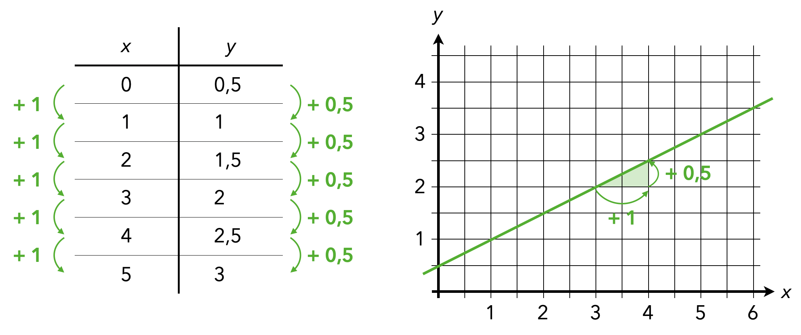
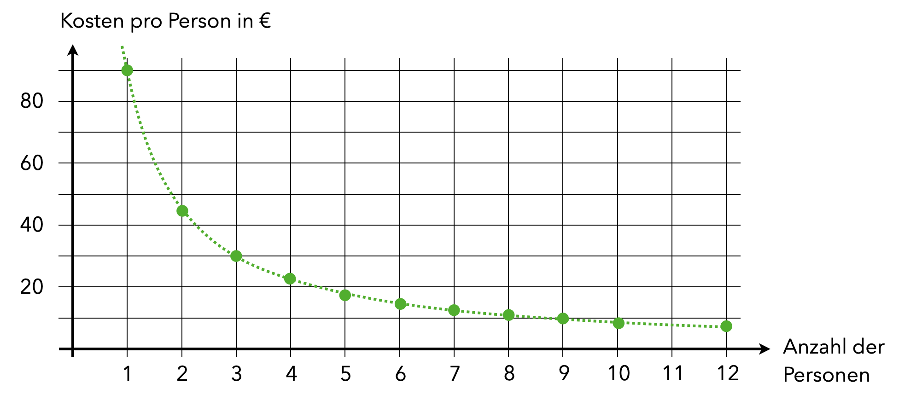

4 Darstellungen und Arbeitsmittel
Ziele
- Sie kennen Möglichkeiten, mathematisches Verständnis mithilfe von Darstellungen auszubilden.
- Sie können Arbeitsmittel über Anschaulichkeit, Abstraktheit und Operierbarkeit charakterisieren.
- Sie kennen ausgewählte Arbeitsmittel für den Mathematikunterricht.>
Material
4.1 Darstellungen
4.1.1 Begriffsklärung
Mathematik vs. Darstellung von Mathematik
Einer der Aspekte der Grundvorstellungsidee ist die Sinnkonstituierung durch Handlungsbezug (siehe Definition 3.2). Sollen Grundvorstellungen bei Schülerinnen und Schülern ausgebildet werden, ist es notwendig, diese Handlungen zu verinnerlichen (vgl. Abschnitt ??). Besonders hilfreich hat sich hierfür der Einsatz von Arbeitsmitteln herausgestellt, anhand derer gehandelt wird.
Mit Salle et al. (2023, S. 437, Hervorhebungen H.E.) wird festgelegt:
Definition 4.1 (Darstellungen) [Mathematische] Darstellungen sind […] alles empirisch Wahrnehmbare, das auf mathematische Beziehungen, Objekte, Strukturen und Prozesse verweisen kann.
Darunter fallen z. B. Wendeplättchen, Rechenrahmen, Zehnersystem-Material, Tangram, Flächen- und Kantenmodelle, Fotos (z. B. von Hängebrücken oder symmetrischen Anordnungen in der Umwelt), Filme bzw. bewegte Bilder im weiteren Sinne, Punktefelder, Diagramme, Tabellen, Zahlenstrahle, Koordinatensysteme, Graphen, Schrägbilder, Drei-Tafel-Projektionen, Skizzen, Gesten und Handlungen mit und an Objekten, Terme, Formeln und Variablen.
Dabei wird häufig zwischen enaktiven, ikonischen und symbolischen Darstellungen unterschieden, mehr Informationen dazu liefern ebenfalls Salle et al. (2023, 433 f.).
4.1.2 Vorstellungen ausbilden
Mithilfe des Einsatzes von Darstellungen ist es möglich, den Verständnisaufbau zu mathematischen Lerngegenständen zu unterstützen. Salle et al. (2023, 441 ff.) schlagen hierzu drei prinzipielle Wege vor, die an einigen Beispielen illustriert werden:
Veränderungen beim Darstellungswechsel untersuchen. Wird von einer Darstellung eines Lerngegenstandes in eine andere übergegangen, ist von besonderem Interesse, was (und warum es) sich dabei verändert und was gleich bleibt. So ist es möglich, die wesentlichen Strukturen, die den Lerngegenstand auszeichnen, herauszuarbeiten und hervorzuheben.
So können beispielsweise zu einer linearen Funktion die Wertetabelle und der Graph miteinander in Bezug gebracht werden. Dabei könnte untersucht werden, wo im Graphen die Wertepaare der Tabelle auftreten und wie sich das additive Verhalten innerhalb der Tabelle im Aussehen des Graphen wiedererkennen lässt (siehe Abbildung 4.1).
Abb. 4.1: Wertetabelle und Graph einer linearen Funktion
Diese prinzipielle Ansicht spiegelt sich auch im EIS-Prinzip12 bzw. Prinzip der Darstellungsvernetzung wider. Mehr dazu und allgemein zu didaktischen Prinzipien finden Sie bspw. bei Heitzer & Weigand (2020).
Operative Veränderungen von Darstellungen untersuchen. Auf ähnliche Weise können auch Veränderungen innerhalb einer Darstellung untersucht werden. Dabei werden Objekte bzw. Operationen systematisch variiert und untersucht, welchen Einfluss dies auf die anderen beteiligten Objekte oder Operationen nimmt. Eine Leitfrage könnte sein: Wie verändert sich …, wenn ich … verändere?
So kann etwa in der symbolischen Darstellung \(2\cdot(3+7)=20\) untersucht werden, wie sich das Ergebnis verändert, wenn der zweite Summand innerhalb der Klammer systematisch um \(1\) erhöht wird, also \(2\cdot(3+8)\) usw. betrachtet wird. Nach dem Aufstellen einer Vermutung (Erhöhung des Ergebnisses um 2) kann untersucht werden, welchen Einfluss die Variation des Vorfaktors (also \(3\cdot(3+7)=20\) usw.) hat. So kann systematisch das Distributivgesetz verinnerlicht werden.
Ein solches Vorgehen spiegelt sich auch im operativen Prinzip wider und kann über das operative Durcharbeiten realisiert werden (vgl. Günster & Ruppert, 2020).
Reflexion und sprachliche Begleitung. Indem die Darstellung selbst und ggf. die (tatsächlichen oder gedanklichen) Handlungen, die mit ihr durchgeführt wurden, im Nachgang reflektiert werden, kann ebenfalls ein Vorstellungsaufbau erfolgen. Auf diese Weise können die durchgeführten Handlungen mit der mathematischen Struktur in Bezug gebracht werden.
Wird beispielsweise die Sachsituation, dass eine Gruppe von Personen die Kosten für eine 90 € teure Feier gleichmäßig untereinander aufteilt, in einem Funktionsgraphen visualisiert, so dürfen die Punkte aufgrund des Definitionsbereichs nicht miteinander verbunden werden. Hier könnte reflektiert werden, warum die Linie im Graphen nur gestrichelt dargestellt ist, um auf die Besonderheit des Definitionsbereichs aufmerksam zu machen.
Abb. 4.2: Graph zu einer Funktion mit natürlichem Definitionsbereich
Ein weiterer hilfreicher Baustein ist in diesem Zusammenhang, die Handlungen zu versprachlichen. So ist es möglich, den Übergang von der tatsächlichen zur geistigen Handlung zu unterstützen. Abbildung 4.3 zeigt eine entsprechende Schrittfolge zum Aufbau von Grundvorstellungen, wie sie Wartha & Schulz (2011, S. 11) vorschlagen (wobei die dort verwendeten Farben nichts mit den hier im Skript genutzten Farben für die vier Ebenen zu tun haben).

Abb. 4.3: Aufbau von Grundvorstellungen nach Wartha & Schulz (2011, S. 11)
4.2 Arbeitsmittel
4.2.1 Begriffsklärung
Wie die Ausführungen im letzten Abschnitt zeigen, sind Darstellungen insbesondere dann hilfreich zum Aufbau mathematischen Verständnisses, wenn an oder mit ihnen mathematisch operiert werden kann. Es soll daher nun der Fokus auf derartige Darstellungen gelegt werden, die spezifisch für diesen Zweck entwickelt sind.
Verbreitet ist in diesem Zusammenhang der Begriff des Arbeitsmittels. Nach Krauthausen (2018, S. 310) sind Arbeitsmittel im Mathematikunterricht Veranschaulichungsmittel (zum Illustrieren oder Visualisieren mathematischer Konzepte) oder Anschauungsmittel (d. h. »Darstellungen mathematischer Ideen in der Hand der Lernenden […] zur (Re-)Konstruktion mathematischen Verstehens«). Entscheidend ist hierbei eine »aktivistische« Sichtweise, also dass die Schülerinnen und Schüler die Arbeitsmittel aktiv als »Denkwerkzeug« verwenden. Die Aufgabe der Lehrkraft ist es dabei, »in den sachgerechten Gebrauch ein[zu]führen und Hilfen (zur Selbsthilfe) im Umgang mit Anschauungsmitteln [zu] gewähren« (Krauthausen, 2018, S. 310). Reinhold et al. (2023, S. 525) formulieren in inhaltlich ähnlicher Weise: »Arbeitsmittel im Mathematikunterricht repräsentieren mathematische Objekte und erlauben Handlungen mit den dargestellten Objekten.«13
Diese Begriffsauffassung soll noch durch einige Bezüge aus der Tätigkeitstheorie angereichert werden. Dort werden Lernmittel im Rahmen der Lerntätigkeit eingesetzt und als ein spezifisches Lernmittel dient dabei das Konzept des Lernmodells. Lernmodelle sind »sinnliche Stützen geistigen Handelns« (Giest & Lompscher, 2006, S. 225) und können bspw. Zeichnungen, strukturierte Darstellungen, digitale Anwendungen usw. sein. Sie haben als Modelle dabei den Vorteil, dass sie »nicht die konkreten Merkmale der einzelnen Erscheinungen oder Situationen, sondern nur konstitutive, im gegebenen Kontext wesentliche Merkmale und Relationen enthalten, also abstrakt sind« (Lompscher, 1983, S. 64, Hervorhebung im Original). Gleichzeitig sind sie aber auch »anschauliche Abbildungen und machen damit die grundlegenden Zusammenhänge und Wesensmerkmale der Wahrnehmung und Vorstellung zugänglich« (Lompscher, 1983, S. 64, Hervorhebung im Original).
Abb. 4.4: Beispiel eines Lernmodells für die Bestandteile eines Algorithmus
Lernmodelle können daher insbesondere für mathematische Lerngegenstände dienlich sein, da sie die »abstrakte Struktur des Gegenstands zusammen mit dem prinzipiellen Weg [..], der zur Aufdeckung der Struktur geführt hat«, beinhalten (Lompscher, 1996, S. 6). Dass es sich dabei nicht ausschließlich um Abbildungen, sondern eben auch haptische Materialien oder digitale Anwendungen handeln kann, machen die obigen und noch folgenden Beispiele deutlich. In dieser Einordnung übernehmen Arbeitsmittel demnach die Aufgabe eines Lernmittels (auch wenn es weitere Lernmittel gibt, die keine Arbeitsmittel sind). In der obigen Aufzählung der Beispiele kann die digitale Stellenwerttafel als Arbeitsmittel aufgefasst werden.
Als Definition für Arbeitsmittel, die sowohl mathematikdidaktische als auch tätigkeitstheoretische Bezüge aufgreift, wird im Folgenden gewählt:
Definition 4.2 (Arbeitsmittel) Ein Arbeitsmittel ist eine materielle oder materialisierte14 Darstellung eines Lerngegenstand, die es ermöglicht, mit dem Lerngegenstand zu operieren. Damit muss ein Arbeitsmittel folgende Bedingungen erfüllen:
- Es enthält die dem Wesen des Lerngegenstands entsprechenden Merkmale und Relationen (Abstraktheit).
- Es macht die dem Lerngegenstand zugrundeliegende Struktur der Wahrnehmung und Vorstellung zugänglich (Anschaulichkeit).
- Es ermöglicht, Lernhandlungen durchzuführen, die der Aneignung des Wesens des Lerngegenstands dienlich sind (Operierbarkeit).
4.2.2 Beispiel Gleichungen
Bevor Arbeitsmittel für Äquivalenzumformungen von Gleichungen untersucht werden, ist es zunächst notwendig, auf der formalen und semantischen Ebene zu klären, was Gleichungen sind und was man sich unter diesen vorstellen kann.
4.2.2.1 Der Gleichungsbegriff
Offensichtlich handelt es sich bei dem Ausdruck \(2+ 3 = 5\) um eine Gleichung. Auch der Ausdruck \(2 + 3 = 8\) stellt eine Gleichung dar – jedoch eine falsche Aussage. Relevant ist bei beiden Ausdrücken, dass zwei Terme durch ein Gleichheitszeichen miteinander verbunden sind. Über den Wahrheitsgehalt einer solchen Gleichung kann jedoch nicht immer eine Aussage getroffen werden. Betrachtet man etwa \(2x = 14\), so kann es sich dabei um eine wahre Aussage (für \(x=7\)) oder um eine falsche Aussage (für \(x\neq 7\)) handeln. In dem Fall spricht man also von einer Aussageform, die erst durch Einsetzen der Variable zu einer Aussage wird.
Zusammenfassend gilt: Eine Gleichung ist eine Aussageform, in der zwei Terme \(T_1(x)\) und \(T_2(x)\) durch ein Gleichheitszeichen miteinander verbunden werden: \(T_1(x) = T_2(x)\) (vgl. Weigand et al., 2022, 242 ff.)
Liegt eine Gleichung als Aussageform vor, z. B. \(\frac{7}{x} = 2\), interessiert in der Regel die Lösung der Gleichung, also \(x = 3,\!5\). Ob eine solche Lösung existiert, hängt jedoch von der Grundmenge ab, in der die Aussageform betrachtet wird. Wird für die Gleichung \(\frac{7}{x} = 2\) als Grundmenge \(\mathbb{Z}\) festgelegt, so ist sie nicht lösbar. Ist dagegen \(\mathbb{Q}\) die Grundmenge, so kann eine Lösung angegeben werden. Die Grundmenge entspricht in der Regel dem zur Verfügung stehenden Zahlbereich. Dagegen beschreibt die Definitionsmenge diejenige Teilmenge der Grundmenge, für die die Aussageform überhaupt definiert ist – im obigen Fall also \(\mathbb{Z}\backslash\{0\}\). Die Menge aller Lösungen, für die die Ausageform eine wahre Aussage ergibt, wird dann als Lösungsmenge bezeichnet und ist demnach wiederum eine Teilmenge der Definitionsmenge.
Weigand et al. (2022, S. 257) unterscheiden in vier Grundvorstellungen zu Gleichungen:
- Operationale Grundvorstellung. Gleichung als Ausdruck einer Berechnung oder Umformung, z. B. \(2+3 = 5\) oder \(V = \frac{1}{3}\pi r^2 h\).
- Relationale Grundvorstellung. Gleichung als Anlass, Zahlen oder Terme zu ermitteln, für die beide Seiten der Gleichung denselben Wert besitzen, z. B. \(2x +1 = 7\).
- Funktionale Grundvorstellung. Gleichung als Ausdruck eines Vergleichs zwischen zwei Funktionstermen, z. B. \(x+1 = -3x\).
- Objekt-Grundvorstellung. Gleichung als ein Objekt, das charakteristische Eigenschaften hat, z. B. \(x^2 +y^2 = r^2\) als Kreisgleichung.
Innerhalb dieser Grundvorstellungen kann nun das Lösen von Gleichungen unterschiedlich interpretiert werden. In der operationalen Grundvorstellung bietet sich bspw. ein Rückwärtsrechnen an, in der funktionalen Grundvorstellung die Schnittpunktbestimmung in einem Diagramm, in dem beide Terme als Funktionsgraphen dargestellt werden. In der Objekt-Grundvorstellung kann das Überprüfen der Passung von Koordinaten zum (ggf. teilweise) Lösen der Gleichung führen, während sich in der relationalen Grundvorstellung Äquivalenzumformungen anbieten.
Für letzteres ist es zunächst notwendig zu klären, was unter der Äquivalez von Gleichungen zu verstehen ist. Einerseits ist dies über eine Lösungsmengenäquivalenz möglich, d. h. zwei Gleichungen (mit derselben Grundmenge) heißen lösungsmengenäquivalent zueinander, wenn sie dieselbe Lösungsmenge besitzen. Die ist etwa bei den Gleichungen \(2x+ 1 = 7\) und \(2x + 3 = 9\) offensichtlich mit der Lösungmenge \(\{3\}\). Jedoch besitzen auch die Gleichungen \(|\mathrm{e}^{\mathrm{i}x}| = 1\) und \(\sin(x) = 0\) dieselbe Lösungsmenge, obwohl die beiden Gleichungen nicht durch offensichtliche Umformungen ineinander übergeführt werden können. Es bietet sich daher auch an, eine Umformungsäquivalenz zu definieren, von der man spricht, wenn zwei Gleichungen durch Äquivalenzumformungen ineinander übergeführt werden können. Letztere wiederum ergeben sich, wenn auf beide Seiten der Gleichungen eine eineindeutige, also injektive Funktion angewandt wird, da diese nicht die Lösungsmenge der Gleichung ändert.15 Dabei sind die Addition, Subtraktion, Multiplikation und Division (bis auf Division durch Null) derartige injektive Funktionen, also Äquivalenzumformungen. Das Quadrieren einer Gleichung dagegen erhält im Allgemeinen nicht die Lösungsmenge, da die Funktion \(^2: x \mapsto x^2\) nicht injektiv ist.
4.2.2.2 Umformungen verstehen
Um Äquivalenzumformungen nachvollziehen zu können, haben sich für den Mathematikunterricht verschiedene Unterstützungsinstrumente etabliert. Diese sollen nun kurz vorgestellt und hinsichtlich ihrer Eignung als Arbeitsmittel (also inwiefern sie die Kriterien aus Definiton 4.2 erfüllen) untersucht werden. Die folgenden Betrachtungen beziehen sich ausschließlich auf lineare Gleichungen mit einer Variablen.
4.2.2.2.1 Waage-Modell
Im Waage-Modell werden Gleichungen über Massestücke auf einer Balkenwaage dargestellt, wobei i. d. R. absolute Werte in anderer Größe oder Form dargestellt werden als die Variable. Die Gleichheit wird visualisiert über das Gleichgewicht der Waage, also dass deren Balken horizontal ausgerichtet ist.
Eine Äquivalenzumformung besteht nun darin, in beiden Waagschalen dieselbe Operation durchzuführen, so dass die Waage stets im Gleichgewicht bleibt.

Abb. 4.5: Waage-Modell für die Gleichung \(2x+1 = 7\)
Ein Vorteil besteht in der hohen Anschaulichkeit des Modells. Auch die Operierbarkeit ist für Gleichungen mit natürlichen Vorfaktoren und ausschließlich Summen gegeben. Hier zeigen sich aber auch schon erste Schwächen. Nach Weigand et al. (2022, 260 f.) bestehen folgende weitere Hürden und Herausforderungen:
Negative Zahlen können kaum sinnvoll dargestellt werden. Hier gäbe es etwa die Möglichkeit, dass z. B. \(x-1\) als ein Massestück für \(x\) mit einem Loch der Größe \(1\) dargestellt wird. Auch ermöglichen digitale Umsetzungen, dass negative Werte eine Bewegung der Waage entgegen der Schwerkraft bewirken. So kann aber nicht mehr an die Handlungserfahrungen mit echten Balkenwaagen angeknüpft werden, in denen das Modell eigentlich seinen Ursprung hat.
Gleichzeitig muss auch zugegeben werden, dass nur noch wenige Schülerinnen und Schüler tatsächlich Erfahrungen mit Balkenwaagen haben. Der Waagetyp ist einerseits unüblich, andererseits auch sehr empfindlich gegenüber kleinen Masseabweichungen. Es ist also in der praktischen Ausführung recht kompliziert, ein Gleichgewicht herzustellen. Außerdem muss, damit das Gleichgewicht jederzeit bestehen bleibt, auf beiden Seiten gleichzeitig operiert werden.
Um die Ausgangssituation der gleichgewichteten Waage herzustellen, muss bereits bekannt sein, über welche Masse das \(x\) repräsentierende Massestück verfügt. Wird also die Situation nicht vorgegeben, erscheint das Lösen unnötig. Außerdem bestünde in der Realität die Möglichkeit, durch Versuch und Irrtum die Masse von \(x\) mit der Waage zu bestimmen, so dass Äquivalenzumformungen ggf. nicht notwendig erschienen und das Vorgehen noch nicht einmal dem Einsetzen verschiedener Werte für \(x\) in die Gleichung entspräche (was einem innermathematischen Versuchen entspräche).
Hinzu kommt, dass das Dividieren zunächst mit einem Bündeln und dann einem Wegnehmen einhergeht. Dies weist (in der äußeren Handlung) Ähnlichkeiten zum Subtrahieren auf, was es jedoch nicht ist.
All diese Einschränkungen und mögliche »Reparaturen« des Modells bzw. des Umgangs mit ihm lassen darauf deuten, dass die Abstraktheit des Modells zu gering ist, es also nicht in ausreichendem Maße das Wesen des Lerngegenstand darstellen kann. Der Drang, nicht mögliche Operationen in das anschauliche Modell zu »pressen«, spricht dafür, dass das Modell auf mathematischer Ebene nicht geeignet genug erscheint, um die Anforderungen an die obige Arbeitsmittel-Definition zu erfüllen.
Dies soll jedoch nicht bedeuten, dass das Modell keinesfalls genutzt werden darf. Barzel & Holzäpfel (2011, S. 7) empfehlen, »das Waage-Modell für den Einsatz mit natürlichen Zahlen auf jeden Fall zu nutzen, um das Prinzip der Äquivalenzumformungen zu erläutern.« Dabei sollten die Grenzen des Modell deutlich gemacht werden und anschließend entweder innermathematisch oder mit alternativen Modellen weitergearbeitet werden.
4.2.2.2.2 Streichholzschachtel-Modell
Eine weitere Möglichkeit bietet das Streichholzschachtel-Modell, bei denen \(x\) die Anzahl der Streichhölzer in einer Schachtel beschreibt, die Gleichung entsprechend mit Schachteln und einzelnen Streichhölzern dargestellt und dann ähnlich wie beim Waage-Modell über gleichartiges Operieren auf beiden Seiten gelöst wird.

Abb. 4.6: Streichholzschachtel-Modell für die Gleichung \(2x+1 = 7\)
Gegenüber dem Waage-Modell bietet dieses Modell eine einfachere Zugänglichkeit (v. a. in der tatsächlichen Unterrichtssituation) und die Anzahl der Hölzer pro Schachtel ist tatsächlich unbekannt. Jedoch muss man einerseits darauf vertrauen, dass in allen Schachteln dieselbe Anzahl an Streichhölzern vorhanden ist und auch die Gleichheit beider Seiten kann nicht (wie z. B. durch die ausgeglichene Waage) visualisiert werden. In dem Sinne ist die Anschaulichkeit etwas geringer, die Operierbarkeit für die Schülerinnen und Schüler etwas besser als beim Waage-Modell.
Hinsichtlich der Abstraktheit sind keine Unterschiede zu verzeichnen: Es ist weiterhin nur eine Bearbeitung mit natürlichen Vorfaktoren und Variablen sinnvoll möglich.
Barzel & Holzäpfel (2011, S. 6) betonen, dass Streichholzschachteln, Plättchen oder Dosen bereits beim Aufstellen von Termen geeignete Visualisierungsinstrumente sind. Insofern bietet dieses Modell eine gute Anschlussfähigkeit zu vorherigen Erfahren.
4.2.2.2.3 Strecken-/Pfeil-Modell
Weigand et al. (2022, 261 f.) beschreibt ein Modell, in dem die beiden Terme einer Gleichung über zwei Strecken dargestellt werden, jeweils zusammengesetzt aus Repräsentanten für die Variablen und für die absoluten Werte. Die Gleichheit zeigt sich dann über die gleiche Länge der Strecken. Eine Verallgemeinerung zu Pfeilen ist möglich und wird unten noch diskutiert.

Abb. 4.7: Pfeil-Modell für die Gleichung \(2x+1 = 7\)
Äquivalenzumformungen sind nun über gleichzeitiges Abziehen oder Hinzufügen bzw. Auftrennen von (Teil-)Strecken visualisierbar. Dieses Modell greift offensichtlich nicht auf derart enaktive Erfahrungen zurück, wie es das Waage- oder Streichholzschachtel-Modell tun. Dennoch erfüllt es das Kriterium der Anschaulichkeit, weil es die dem Lerngegenstand zugrundeliegende Struktur der Wahrnehmung und Vorstellung zugänglich macht. Die Operierbarkeit ist für gedankliche Operationen und, wenn die Strecken z. B. über Papierstreifen realisiert werden, auch in Form von real durchgeführten Operationen möglich. Eine digitale Umsetzung des Modells kann bspw. die Operierbarkeit erhöhen und zu einer virtuell-enaktiven Handlungsoption führen.
Ein großer Vorteil des Modells liegt jedoch in der Abstraktheit:
So sind gleichermaßen natürliche wie (positive) gebrochenrationale Vorfaktoren visualisierbar, was sich nur in der Länge der (Teil-)Strecken auswirkt.
Auch negative Vorfaktoren können über Pfeile in die Gegenrichtung repräsentiert werden. Eine solche Darstellung ist im Umgang mit der Zahlengeraden bekannt, kann auch bei Termen wieder aufgegriffen und hier nun zum Lösen von Gleichungen weiter genutzt werden.
Abb. 4.8: Pfeil-Modell für die Gleichung \(2x-1 = 5\)
- Das Modell bietet weiterhin die Möglichkeit, die Gleichheit der beiden Terme abhängig vom Wert für \(x\) nachvollziehbar zu machen. Je nachdem, wie groß \(x\) ist, kann also die Gleichung \(2x+1 = 7\) wahr sein (beide Strecken gleich lang) oder eben nicht. Unterstützt werden kann dies, indem \(x\) dynamisch variiert wird, etwa in einem digitalen Arbeitsmittel.

Abb. 4.9: Gleichheit/Ungleichheit der Terme \(2x+1\) und \(7\) im Pfeil-Modell
Insofern erfüllt eine Umsetzung dieses Modells über ein digitales Arbeitsmittel, in dem virtuell-enaktiv operiert werden kann, die Forderungen aus Definition 4.2.
References
E, I und S stehen hier für enaktiv, ikonisch und symbolisch.↩︎
Den Arbeitsmitteln werden hier Anschauungsmittel entgegengestellt, jedoch in einer eher demonstrierenden Bedeutung (Reinhold et al., 2023, S. 526), was eher dem Begriff der Veranschaulichungsmittel bei Krauthausen (2018, S. 310) entspricht.↩︎
Damit sind auch Abbildungen, Strukturdiagramme oder Apps eingeschlossen.↩︎
Dies folgt aus folgender Überlegung: Sei eine Gleichung \(T_1(x) = T_2(x)\) mit der Grundmenge \(\mathbb{G}\) gegeben, \(\mathbb{L}\) die Lösungsmenge der Gleichung und \(\varphi: \mathbb{G}\rightarrow \mathbb{G}\) eine injektive Funktion. Für \(x \in \mathbb{L}\) ist \(T_1(x) = T_2(x)\) eine wahre Aussage und damit \(\varphi(T_1(x)) = \varphi(T_2(x))\), also \(x\in\mathbb{L}_\varphi\), d. h. Lösung der umgeformten Gleichung. Sei weiterhin \(y\in \mathbb{L}_\varphi\), d. h. \(\varphi(T_1(y)) = \varphi(T_2(y))\). Dann ist wegen der Injektivität \(\varphi^{-1}(\varphi(T_1(y))) = \varphi^{-1}(\varphi(T_2(y)))\), also \(T_1(y) = T_2(y)\), also \(y\in\mathbb{L}\). Daraus folgt \(\mathbb{L} = \mathbb{L}_\varphi\).↩︎